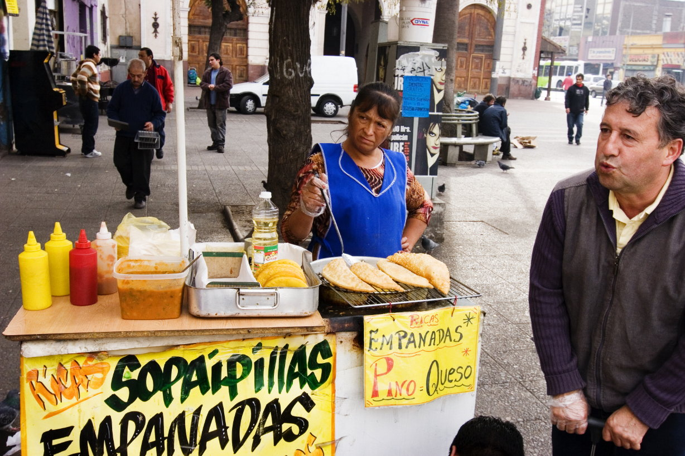

Este sábado 10 de julio se conmemora una nueva versión del Día Nacional de la Sopaipilla, un evento tradicionalmente ligado a muchas calorías, pero la vida sana y la creatividad también han ganado un espacio en esta celebración. Y con el auge de las Freidoras de Aire poder prepararlas en casa con menos aceite es una realidad. Oster cuenta con modelos de 1.8, 4, 5.5, 10 y hasta 22 litros, en formato manual y digital, logrando en todos los casos resultados deliciosos y saludables.
